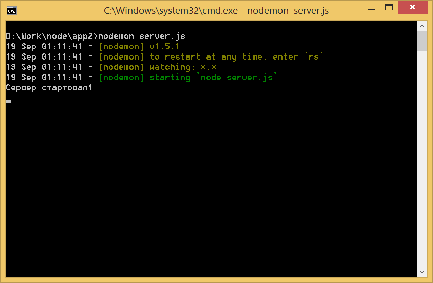
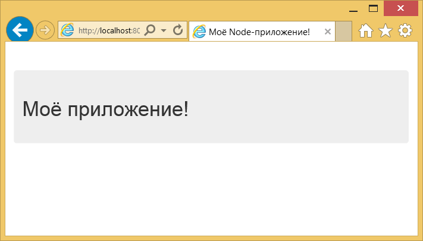

Запуск HTTP-сервера и выдача HTML-файла
Запуск HTTP-сервера с Node
Код для этого примера вы можете найти здесь.
Node не только содержит возможность обрабатывать JS-файлы, как мы только что сделали, он также может создать HTTP-сервер. Мы собираемся рассмотреть создание HTTP-сервера с Node-фреймворком Express для обработки HTML-файла.
В первом приложении мы только выводили что-то в консоль. Двигаясь вперёд, мы учтём чему уже научились для следующего шага, в котором мы можем организовать веб-сайт для наших пользователей. На один шаг мы станем ближе к полноценному веб-приложению.
Давайте придерживаться того же приложения, добавив фреймворк Express с выдачей HTML-файла. Нам понадобятся те же файлы (package.json, server.js) и к ним мы добавим новый файл index.html.
Express: Node-фреймворк
Одним из самых больших преимуществ Node является то, что он содержит поддержку множества пакетов. Сообщество отправляет много пакетов в npm и на момент написания в нём хранится 129257 пакетов, которые загрузили свыше 17694831 раз за последний день. Это большое достижение!
Пакеты расширяют функциональность нашего приложения и найдутся пакеты для многих разных случаев применения.
Вы, возможно, слышали о Grunt, Gulp или даже препроцессорах CSS вроде Less — всё это может быть пакетом.
Express — лёгкая платформа для создания веб-приложений с использованием Node.js. Express помогает организовать веб-приложение на стороне сервера. Сайт ExpressJS описывает его как «минимальной и гибкий Node-фреймворк для веб-приложений».
Express скрывает много внутренней работы Node, которая позволяет вам погрузиться в код приложения, получать всякие штуки и работать намного быстрее. Он прост для изучения и ещё даёт вам немного гибкости с его структурой.
Существует причина, почему в настоящее время это самый популярный фреймворк для Node. Вот несколько больших имён использующих Express:
- MySpace
- Klout
- Segment.io
Для просмотра полного списка зайдите на эту страницу.
Express поставляется с несколькими замечательными возможностями, которые добавят лёгкости в вашу разработку:
- маршрутизация;
- обработка запросов;
- настройки приложения;
- связующее программное обеспечение.
Не волнуйтесь, если эти термины являются для вас новыми. Просто знайте, что Express делает разработку намного проще и работать с ним в радость.
Установка Express
Пакеты для конкретного приложения Node определяются в package.json. Для получения установленных пакетов вы можете использовать один из двух методов:
- Метод 1: Написать пакет в package.json.
- Метод 2: В командной строке использовать npm install.
Мы собираемся использовать второй метод. Перейдите в командную строку и наберите:
$ npm install express --saveМодификатор --save сообщает npm, что он должен записать этот пакет в ваш файл package.json. Если вы выполните эту команду и посмотрите файл package.json, то заметите, что пакет появился в разделе dependencies. Вы также заметите, что была создана новая папка с именем node_modules. В ней Node хранит пакеты для конкретного проекта.
Меняться проектами между разработчиками и сотрудниками очень легко. Просто отправьте другим пользователям ваш проект и они запустят npm install чтобы установить всё из раздела dependencies.
Поскольку у нас уже есть Node и готов Express, используем их для создания HTTP-сервера и выдачи HTML-файла нашим пользователям.
Создание HTTP-сервера и отправка HTML-файла
Начнём с лёгкой части на нашем пути — с HTML-файла. В проекте создайте новый файл index.html и поместите внутрь следующее:
<!DOCTYPE html>
<html lang="ru">
<head>
<meta charset="UTF-8">
<title>Моё Node-приложение!</title>
<!-- CSS -->
<link rel="stylesheet" href="//maxcdn.bootstrapcdn.com/bootstrap/3.3.2/css/bootstrap.min.css">
<style>
body { padding-top:50px; }
</style>
</head>
<body class="container">
<div class="jumbotron">
<h1>Моё приложение!</h1>
</div>
</body>
</html>Мы будем ссылаться на CSS из фреймворка Bootstrap через Bootstrap CDN, это поможет нам быстро сделать стилизацию для этой демонстрации.
Двинемся вперёд и создадим наш HTTP-сервер в Node с помощью Express. Удалите всё из файла server.js и добавьте то что нам понадобится:
// берём Express
var express = require('express');
// создаём Express-приложение
var app = express();
// создаём маршрут для главной страницы
// http://localhost:8080/
app.get('/', function(req, res) {
res.sendfile('index.html');
});
// запускаем сервер на порту 8080
app.listen(8080);
// отправляем сообщение
console.log('Сервер стартовал!');Кроме этого файла больше ничего не требуется, чтобы использовать Express для запуска HTTP-сервера и отправки HTML-файла!
require() является основным путём вызова пакета в Node. После создания Express-приложения в app, мы можем определить маршрут с помощью переменной HTTP. app.get() создаёт GET маршрут /.
При создании маршрутов, мы всегда будем иметь доступ к req (запрос) и res (ответ). Запрос содержит информацию из браузера. Ответ — это то, что мы отправим обратно пользователю. Мы используем sendfile(), но гораздо больше вещей можно сделать, отправляя данные обратно в формате JSON с помощью res.json().
Сервер запускается через app.listen() и туда же передаётся желаемый порт 8080.
Чтобы убедиться что всё работает, перейдите в командную строку, чтобы обработать этот файл и запустить сервер.
$ nodemon server.js
Теперь мы можем посмотреть на наш сайт в браузере по адресу http://localhost:8080.

Всякий раз, когда мы запускаем сервер с Node, он будет размещён по адресу http://localhost:НОМЕР_ПОРТА.
Это очень лёгкий и быстрый способ создать HTTP-сервер и начать разработку. Node и Express могут применяться для создания удивительных приложений или при необходимости они просто запускают простой сервер для работы.
Отлично! Мы уже много сделали с Node:
- установили Node;
- обработали очень простой файл;
- использовали npm для установки пакета;
- создали HTTP-сервер с Express;
- отобразили HTML-файл.
Давайте сделаем следующий шаг и создадим приложение, которое на самом деле показывает соответствующие данные.